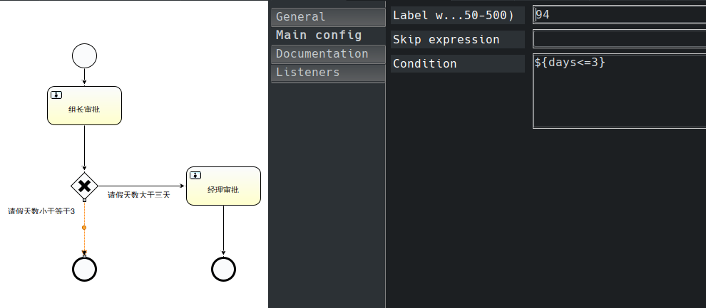

Activiti5框架的由来
JBPM，全称是 Java Business Process Management(业务流程管理系统) ，它是覆盖了业务流程管理、工作流、服务协作等领域的一个开源的、灵活的、易扩展流程语言框架。JBPM是开源项目。
JBPM在2004年10月18日，发布了2.0版本，并在同一天加入了JBoss，成为JBoss企业中间件平台的一个组成部分，它的名称也改为JBoss JBPM。
在 JBPM4 之后，公司内部对于软件的规划发生了分歧，所以当时的项目架构师脱离了原来的公司，加入新公司后。改了名称为 Activiti5。
JBPM 采用 Hibernte (JBPM核心发生了很大的变化)
Activiti5 采用 Mybatis (Mybatis3， 1和2都叫做iBatis)
Activiti5框架
Eclipse Activiti5插件安装
- 打开Eclipse
- 点击Help
- 点击Install New Software
- 点击Add
- Name：Activiti BPMN 2.0 desiger
Location：http://www.activiti.org/designer/update
引擎和服务接口
- ProcessEngine： 这个类是Activiti5的核心，所有的服务都需要通过 ProcessEngine 来创建，该类是 线程安全 的
Activiti5持久化层采用的是Mybatis，这样移植性好。Activiti5主要包含 7个Service ，这些Service都是通过 ProcessEngine 创建。 - RepositoryService(持久化服务)： 与数据库进行交互的
- RuntimeService(运行时服务)： 与运行流程有关
- FormService(表单服务)： 与流程中的表单信息有关
- IdentityService(身份信息)： 流程中的标识信息
- TaskService(任务服务)： 与流程中的每一个步骤有关
- HistoryService(历史信息)： 查看历史的流程步骤
- ManagementService(管理定时任务)： 在固定的时间点完成固定的任务
23张表
在你使用Activiti5时会在数据库中创建23张数据表，Activiti5使用到的表都是 ACT_ 开头的。
- ACT_RE_* ：
RE表示repository(存储)，RepositoryService接口所操作的表，带此前缀的表包含的是静态信息。如：流程定义，流程的资源(图片，规划等)。 - ACT_RU_* ：
RU表示runtime，运行时表-RuntimeService。这是运行时的表存储着流程的变量，用户任务，变量，职责(job) 等运行时的数据。Activiti5之存储实例执行期间的运行时数据，当流程实例结束时，将删除这些记录。这就保证了这些运行时的表小且快。 - ACT_ID_* ：
ID表示identity(组织机构)，IdentityService接口所操作的表。用户记录，流程中使用到的用户和组。这些表包含标识的信息，如：用户，用户组等等。 - ACT_HI_* ：
HI表示history，历史数据表，HistoryService。就是这些表包含着流程执行的历史相关数据。如：结束的流程实例，变量，任务等等。 - ACT_GE_*：全局通用数据及设置(general)，各种情况都使用的数据。
| 序号 | 表名 | 说明 |
|---|---|---|
| 1 | act_ge_bytearray | 二进制数据表 |
| 2 | act_ge_property | 属性数据表存储整个流程引擎级别的数据，初始化表结构时，会默认插入三条数据 |
| 3 | act_hi_actinst | 历史节点表 |
| 4 | act_hi_attachme | 历史附件表 |
| 5 | act_hi_comment | 历史意见表 |
| 6 | act_hi_identitylink | 历史流程人员表 |
| 7 | act_hi_detail | 历史详情表，提供历史变量的查询 |
| 8 | act_hi_procinst | 历史流程实例表 |
| 9 | act_hi_taskinst | 历史任务实例表 |
| 10 | act_hi_varinst | 历史变量表 |
| 11 | act_id_group | 用户组信息表 |
| 12 | act_id_info | 用户扩展表 |
| 13 | act_id_membership | 用户与用户组对应信息表 |
| 14 | act_id_user | 用户信息表 |
| 15 | act_re_deployment | 部署信息表 |
| 16 | act_re_model | 流程设计模型部署表 |
| 17 | act_re_procdef | 流程定义数据表 |
| 18 | act_ru_event_subscr | throwEvent、catchEvent时间监听信息表 |
| 19 | act_ru_execution | 运行时流程执行实例表 |
| 20 | act_ru_identitylink | 运行时流程人员表，主要存储任务节点与参与者的相关信息 |
| 21 | act_ru_job | 运行时定时任务数据表 |
| 22 | act_ru_task | 运行时任务节点表 |
| 23 | act_ru_variable | 运行时流程变量数据表 |
CODE
创建23张表
Activiti5配置文件：
1 | <?xml version="1.0" encoding="UTF-8"?> |
创建表：
1 | //这段代码执行时将会在数据库中创建23张数据表 |
部署流程
画工作流图：
部署流程之前，得先画好工作流图。怎么画工作流图
部署：
1 | //部署流程定义 |
部署之后，数据表中的：
- act_ge_bytearray
- act_re_deployment
- act_re_procdef
这三张表会有数据生成，具体的可以自己去康康
流程定义查询
从 act_re_procdef 表查询定义流程的信息
1 | //流程定义查询 |
创建流程实例
1 | //创建流程实例 |
执行代码后：
- act_hi_actinst： 历史活动的实例表表
- act_hi_procinst： 历史的流程实例表
- act_hi_taskinst： 历史的任务实例表
- act_ru_execution： 正在运行的任务表
- act_ru_task ： 正在运行的任务数据表
这四张表会有数据的变动
创建任务查询实例
画工作流图并给属性赋值
下图的意思是将组长审批任务交给lisi处理。经理审批亦是如此
任务查询代码
1 | //创建任务查询实例 |
历史实例查询
1 | //历史实例查询 |
任务领取
画工作流图并给属性赋值
下图意思是将组长审批这个任务分发给一个组名为yyf的小组，然后由小组内的成员领取任务。
任务领取实例代码
1 | //领取任务 |
流程变量
画工作流图并给属性赋值
下图意思是将组长审批任务的处理人设为变量${tl}，然后在代码里将该变量赋值
流程变量赋值
1 | //设置流程变量 |
排他网关——决策
画工作流图并给属性赋值

排他网关代码
1 | //排他网关 |
并行网关——会签
画工作流图并给属性赋值
并行网关代码
1 | //并行网关 |
包含网关——排他+并行
画工作流图并给属性赋值
包含网关代码
1 |
|